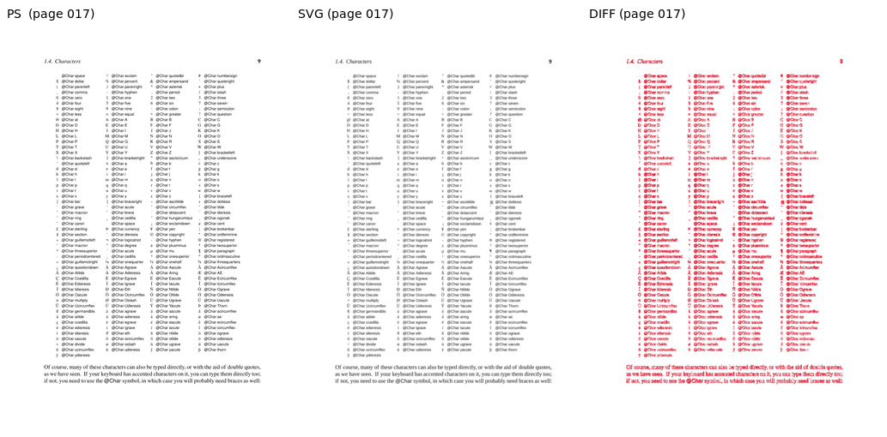
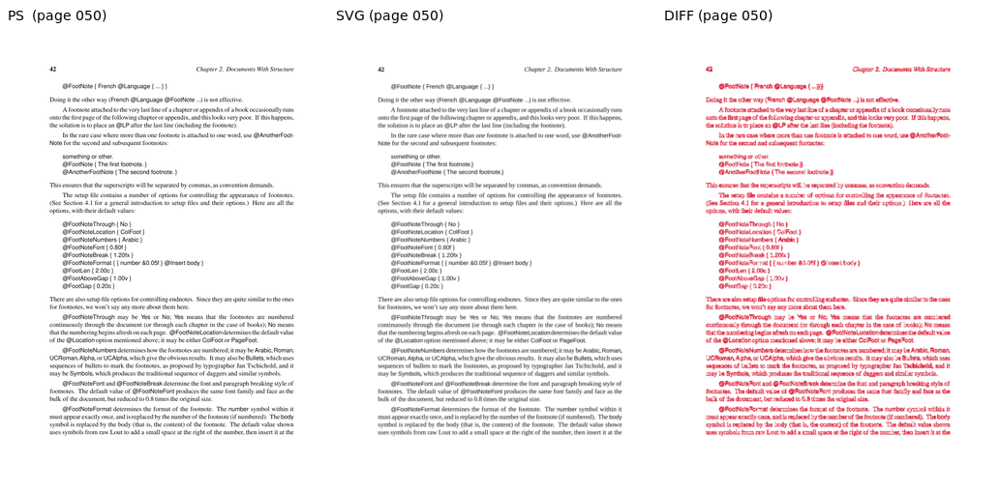
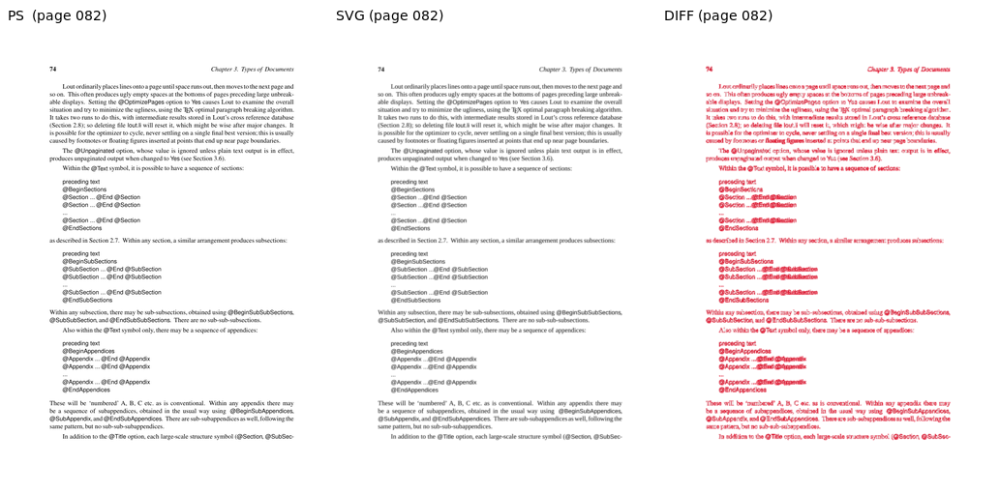
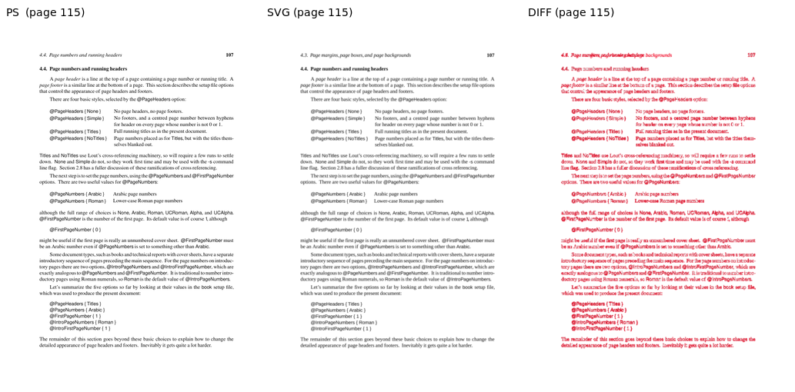
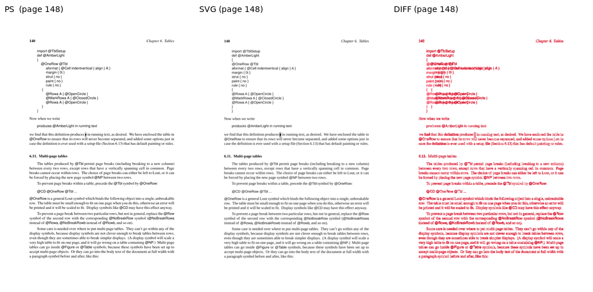
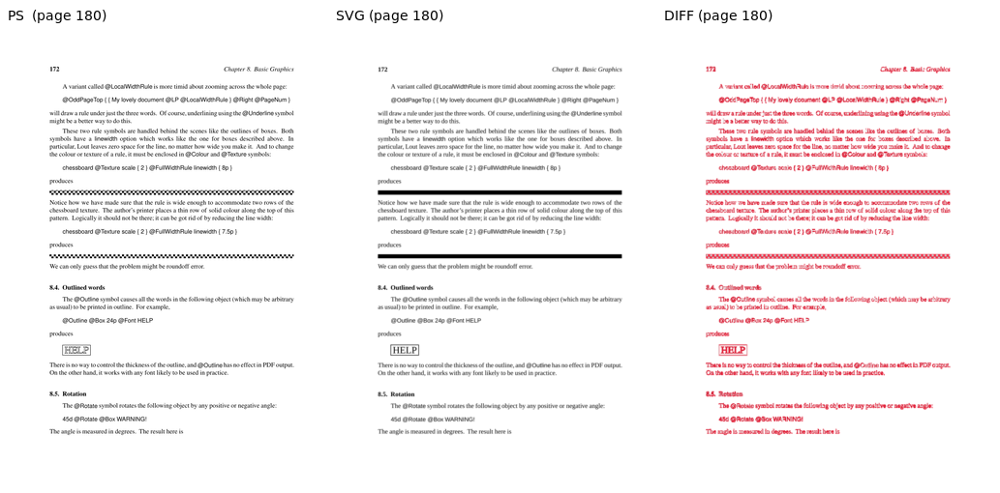
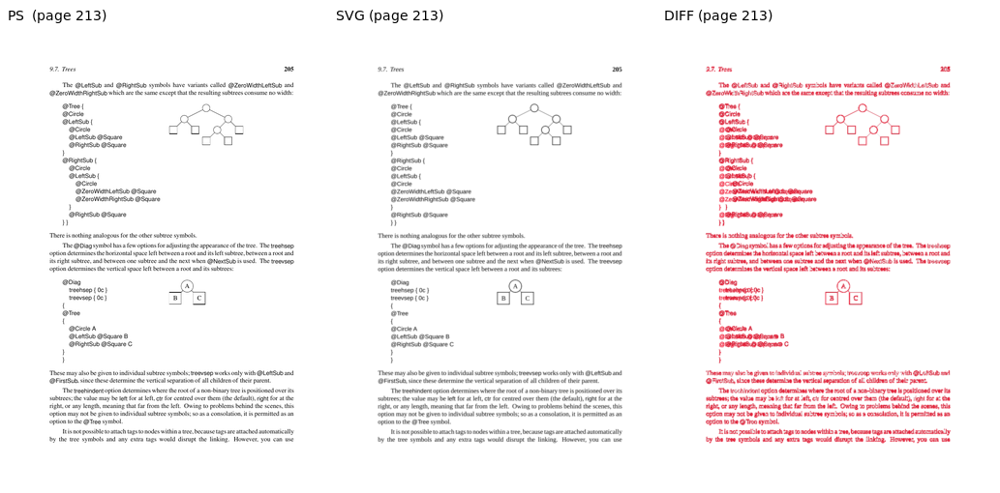
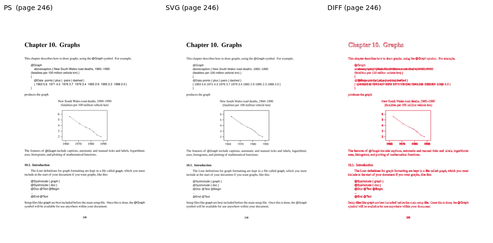
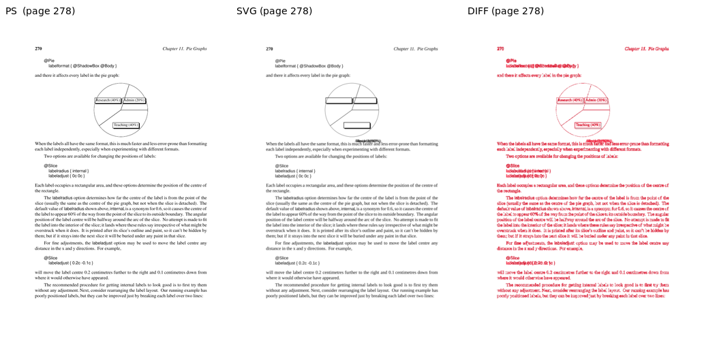
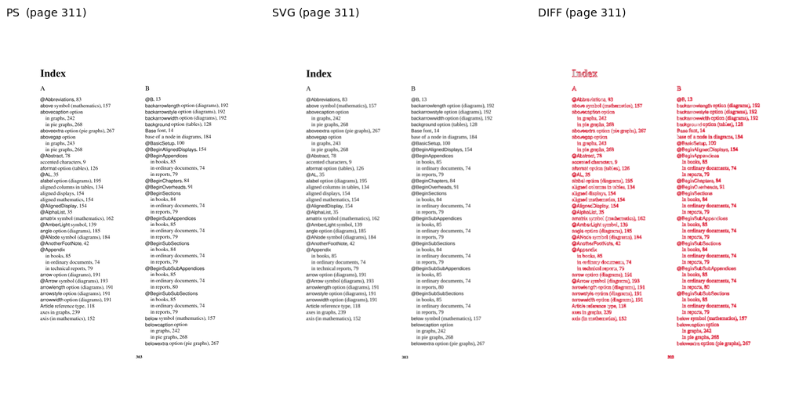

Sampled pages, rendered via both the PostScript pipeline (lout + ps2pdf + pdftoppm) and the SVG pipeline (lout -G via z53.c + rsvg-convert). AE = ImageMagick absolute-error pixel count at 5% fuzz; SSIM is scikit-image structural_similarity on luminance (1.0 = identical).
| Page | W | H | Diff px | Diff % | SSIM | Verdict |
|---|---|---|---|---|---|---|
| 017 | 827 | 1170 | 87842 | 9.08 | 0.9197 | DIFF |
| 050 | 827 | 1170 | 93565 | 9.67 | 0.9267 | DIFF |
| 082 | 827 | 1170 | 77994 | 8.06 | 0.9402 | DIFF |
| 115 | 827 | 1170 | 91708 | 9.48 | 0.9253 | DIFF |
| 148 | 827 | 1170 | 83909 | 8.67 | 0.8987 | DIFF |
| 180 | 827 | 1170 | 70637 | 7.30 | 0.9342 | DIFF |
| 213 | 827 | 1170 | 70995 | 7.34 | 0.9009 | DIFF |
| 246 | 827 | 1170 | 43556 | 4.50 | 0.9458 | OK |
| 278 | 827 | 1170 | 66931 | 6.92 | 0.9435 | DIFF |
| 311 | 827 | 1170 | 61697 | 6.38 | 0.9534 | DIFF |









